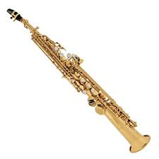
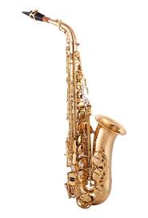
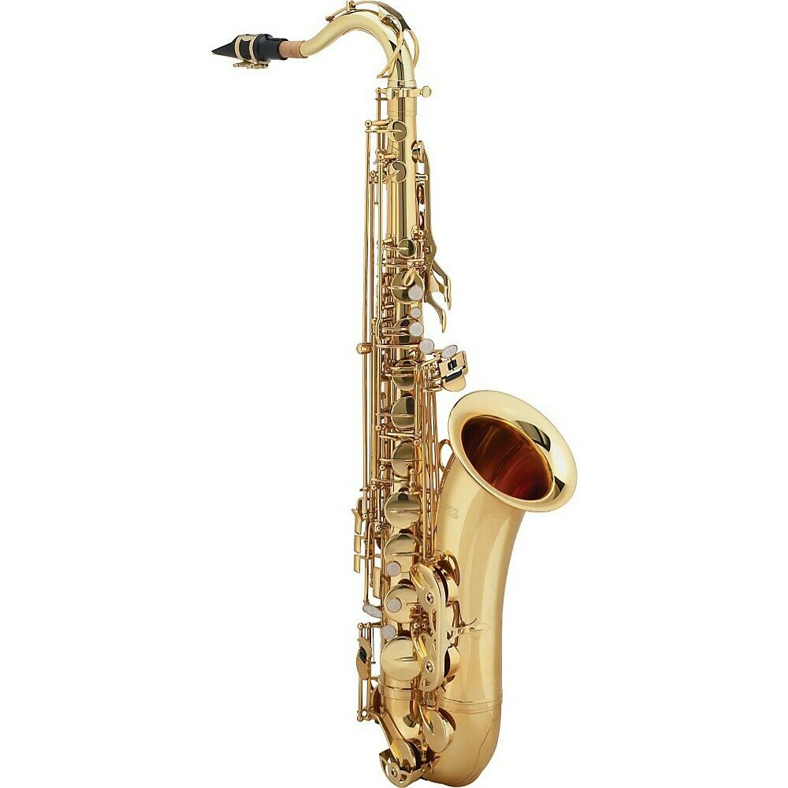

The kinds of Saxophone:
-

The soprano saxophone is a higher-register variety of the saxophone, a woodwind instrument, invented in the 1840s.
The soprano is the third smallest member of the saxophone family, which consists (from smallest to largest) of the soprillo, sopranino, soprano, alto, tenor, baritone, bass, contrabass saxophone and tubax. Soprano saxophones are the smallest saxophone in common use.
It is a transposing instrument pitched in the key of B♭, modern soprano saxophones with a high F♯ key have a range from B♭3 to F♯6 and are therefore pitched one octave above the tenor saxophone.
Some saxophones have additional keys, allowing them to play an additional F♯ and G at the top of the range. These extra keys are commonly found on more modern saxophones.
Additionally, skilled players can make use of the altissimo register, which allows them to play even higher.
There is also a soprano pitched in C, which is less common and until recently had not been made since around 1940. -

The alto saxophone, also referred to as the alto sax, is a member of the saxophone family of woodwind instruments invented by Belgian instrument designer Adolphe Sax in the 1840s, and patented in 1846.
It is pitched in E♭, and is smaller than the tenor, but larger than the soprano.
The alto sax is the most common saxophone and is commonly used in concert bands, chamber music, solo repertoire,military bands, marching bands, and jazz (such as big bands, jazz combos, swing music).
The fingerings of the different saxophones are all the same so a saxophone player can play any type of saxophone.
The alto saxophone had a prominent role in the development of jazz. Influential jazz musicians who made significant contributions include Don Redman, Jimmy Dorsey, Benny Carter, Charlie Parker, Sonny Stitt, Lee Konitz, Jackie McLean, Phil Woods, Art Pepper, and Paul Desmond. -

The tenor saxophone is a medium-sized member of the saxophone family, a group of instruments invented by Adolphe Sax in the 1840s.
The tenor and the alto are the two most commonly used saxophones.
The tenor is pitched in the key of B♭ (while the alto is pitched in the key of E♭), and written as a transposing instrument in the treble clef, sounding an octave and a major second lower than the written pitch.
Modern tenor saxophones which have a high F♯ key have a range from A♭2 to E5 (concert) and are therefore pitched one octave below the soprano saxophone. People who play the tenor saxophone are known as "tenor saxophonists", "tenor sax players", or "saxophonists".
The tenor saxophone uses a larger mouthpiece, reed and ligature than the alto and soprano saxophones.
Visually, it is easily distinguished by the curve in its neck, or its crook, near the mouthpiece.
The alto saxophone lacks this and its neck goes straight to the mouthpiece
. The tenor saxophone is most recognized for its ability to blend well with the soprano, alto and baritone saxophones, with its "husky" yet "bright" tone. Many of the most innovative and influential jazz musicians have been tenor saxophonists.
These include Coleman Hawkins, Lester Young, Ben Webster, Dexter Gordon, Wardell Gray, Stan Getz, Sonny Rollins, John Coltrane and Wayne Shorter.
The work of younger players such as Michael Brecker and Chris Potter has been an important influence in more recent jazz. -

The baritone saxophone or "bari sax" is one of the larger members of the saxophone family, only being smaller than the bass, contrabass and subcontrabass saxophones.
It is the lowest-pitched saxophone in common use.
The baritone saxophone uses a mouthpiece, reed, and ligature in order to produce sound.
It is larger than the tenor, alto and soprano saxophones, which are the other commonly found members of the family.
The baritone saxophone is commonly used in concert bands, chamber music, military bands, jazz (such as big bands and jazz combos).
It also is occasionally employed in marching bands, though less frequently than other saxophones due to its size and weight.
A number of jazz performers have used the baritone saxophone as their primary instrument.
It is part of standard big band instrumentation (the larger bass saxophone was also occasionally used up until the 1940s).
As phrased by Alain Cupper, "Used a few times in contemporary classical music, it is especially in jazz that this wonderful instrument feels most comfortable." One of the instrument's pioneers was Harry Carney, longtime baritone saxophone player in the Duke Ellington band.
Since the mid-1950s, baritone saxophone soloists such as Gerry Mulligan, Cecil Payne, and Pepper Adams achieved fame, while Serge Chaloff was the first baritone saxophone player to achieve fame as a bebop soloist.
In free jazz, Peter Brötzmann is notable.
More recent notable performers include Hamiet Bluiett (who has also led a group of baritone saxophone players), John Surman, Scott Robinson, James Carter, Stephen "Doc" Kupka of the band Tower of Power, Nick Brignola, Gary Smulyan, Brian Landrus, and Ronnie Cuber.
In the avant-garde scene, Tim Berne has doubled on bari. Another modern bari sax player is Leo Pellegrino of "Lucky Chops" and "Too Many Zooz" A noted Scottish performer is Joe Temperley, who has appeared with Humphrey Lyttelton as well as with the Lincoln Center Jazz Orchestra.